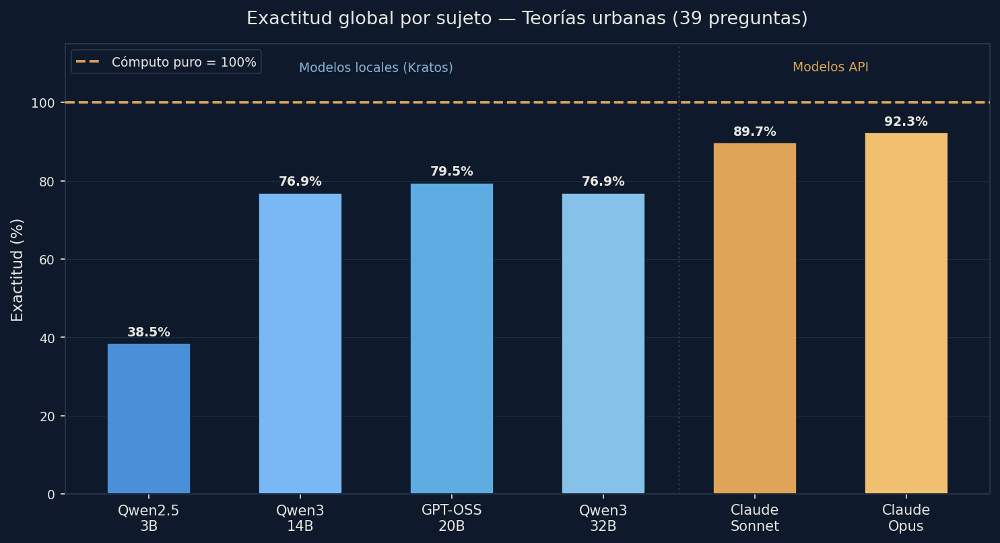
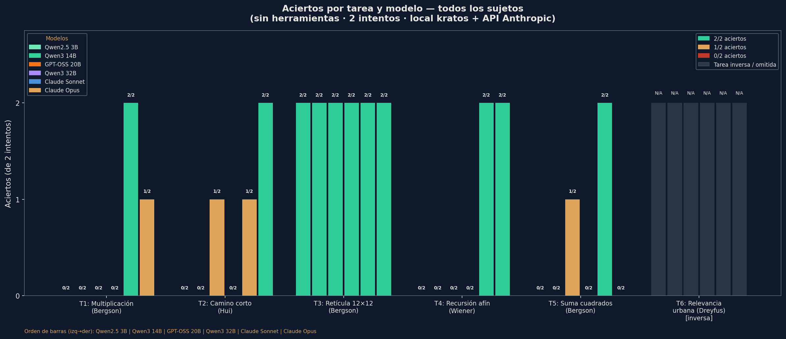

«Sobre el límite de la inteligencia artificial»
(pp. 163–191)
Pregunta guía
¿Dónde está el límite de la IA —y por qué ese límite no es técnico?
Filosofía de la Ciudad
· Unidad Urban AI
· 12 de junio de 2026
Eje filosófico · 1 · Bergson
La inteligencia exteriorizada
homo faberfabricar herramientas
mecánicoautomatismo repetición
vitalduración impulso creador
La IA exterioriza la inteligencia y desborda la intención — pero exteriorizar no es entender.
Conceptointeligencia fabricadora vs. impulso vital (élan vital) — marco del presentador; Hui trabaja la tensión mecánico/vital sin citar el élan vital en este capítulo
Wienerretroalimentación la salida vuelve como entrada
Simondonindividuación técnica concretización de funciones
Kantjuicio reflexionante la regla desde el caso
La IA aplica reglas (juicio determinante) pero no las genera desde el caso ni se da sus fines.
Eje filosófico · 3 · Dreyfus · Heidegger
Mundo y relevancia
El mundo —en clave heideggeriana, según la lectura de Dreyfus— es un horizonte de significatividad, no un conjunto de datos.
Lo que la IA no puede es decidir qué es relevante — y la relevancia no se programa de antemano.
ConceptoDasein · ser-en-el-mundo
Experimento 1 · Protocolo
LLM vs. cómputo puro — gradiente de escala
El 32B tardó 3683 s: timeouts >600 s en T2 y T4.
6sujetos 3B → Opus
5+1tareas computables + 1 inversa
0herramientas solo razonamiento
Tarea
Qué exige
Autor
T1 · Multiplicar 2 enteros de 12 dígitos
precisión dígito a dígito
Bergson
T2 · Camino más corto (grafo de 25 barrios)
óptimo global determinístico
óptimo global
T3 · Conteo de rutas en retícula 12×12
combinatoria explosiva
Bergson
T4 · Recursión afín modular (40 pasos)
fidelidad iteración a iteración
Wiener
T5 · Suma de cuadrados de 30 sensores
agregado aritmético exacto
Bergson
T6 · Juicio de relevancia en escena urbana
tarea inversa: ¿qué es relevante?
Dreyfus
4 locales en hardware propio (kratos · RTX 5070 Ti · Ollama) + 2 de frontera (Sonnet, Opus) · verdad de referencia: Python en el mismo equipo · 2 intentos/modelo
Experimento 1 · Resultados
La escala no cruza el límite
El 20B local supera al 32B: la escala no es monótona.
El 3B y el 32B empatan en 20%, y el 20B (40%) supera al 32B. La curva no es monótona.
El salto es local → frontera (Sonnet 90%, Opus 70%) — pero ni el mayor toca el 100% trivial de Python; y Opus < Sonnet.
Matiz: el conteo combinatorio T3 lo resuelven los seis (2/2) — es memorizable. La escala compra precisión en algunos regímenes, no cruza el umbral.
Un portátil corre las 13 en 64,7 s: $6,9×10⁻⁶ por respuesta.
von Thünenanillos de renta · 1826
Alonsobid-rent · 1964
Christallerlugares centrales · 1933
Reilly–Huffgravitación comercial · 1931
Schellingsegregación · 1971
Duncandisimilitud · 1955
Zipfrango-tamaño · 1949
Bettencourt–Westescalamiento · 2007
Autómata celularcrecimiento · 1993
DLA · Battyfractal urbano · 1994
Hillier–Hansonsintaxis espacial · 1984
Braess–Wardropequilibrio · 1968
Gravitacionalflujos · 1948
Un portátil las corre todas, exactas, en minutos. El conocimiento urbano clásico ya está disponible.8 de las 13 abren su simulación viva — click ▸
Lo que ya sabemos computar · galería viva
Cuatro, vivas
Schelling · la segregación que nadie eligióclick → datos
DLA · Batty–Longley · la ciudad crece como fractalclick → datos
Christaller · la teselación hexagonal se autoconstruyeclick → datos
Braess–Wardrop · abrir una vía empeora el tráfico de todosclick → datos
Simulaciones vivas en navegador (window.VIZ) · datos canónicos en datos/<id>.json · PNG estáticos siguen en assets/sim y en los anexos · catálogo: simulaciones/catalogo.json
Experimento 2 · Banco de teorías
Los 6 sujetos contra 39 preguntas

39 preguntas derivadas de las 13 teorías · 3 por teoría · forma cerrada + emergente.
Aquí la escala sí ordena más: 3B 38.5% → frontera ~90%. Opus 92.3% > Sonnet 89.7%.
Pero nadie llega al 100% del cómputo puro — la verdad sigue del lado del algoritmo.
Forma cerrada: hasta 100% (Opus). Emergente: cae a 75–83% en frontera y a 0% en el 3B.
Filas verdes de punta a punta: Christaller, Zipf, DLA, Sintaxis — fórmulas memorizables.
Lo emergente exige simular, no recordar: ahí la IA estima y el algoritmo acierta.
forma cerrada (27 preg.) vs. emergente (12 preg.) · heatmap: teorias_heatmap.png · gráfico: teorias_cerrada_vs_emergente.png · Fuente: resultados_teorias.json
Experimento 2 · Costo
¿Cuánto cuesta saber esto?
Cuatro órdenes de magnitud separan al cómputo puro de la frontera. El límite no es epistémico: es económico y político.
Escala log · rangos API como barras de error · Fuente: experimento/costos.json · medido (tiempo/GPU) + estimado (tarifa, API)
Lectura filosófica
El límite es especular
≠ cálculopredice tokens, no ejecuta el algoritmo
escalano cruza el umbral categorial
T6 = ∅Python no arranca: falta la función objetivo
En T6 cada modelo respondió algo distinto (niño, repartidor, acompañante; un local alucinó una «mujer mayor»). Hay relevancia, no unicidad — falta el mundo que la fije.
Tesis el cómputo no decide relevancia · la estadística no garantiza verdad · la escala no bastó para cruzarlo(ilustración consistente con Hui)
Eje filosófico · 4 · Urban AI
Gobernar no es gestionar
En lo emergente la frontera cae a 75–83%; el algoritmo, 100%.
¿Qué tipo de mundo produce la IA cuando convierte la ciudad en datos computables?
La smart city reduce la urbe a sensores y cálculo. Pero gobernar es una escena T6, no una tarea T1 — y quién posee la infraestructura es parte de la pregunta.
Huicosmotécnica (concepto analítico) · tecnodiversidad (propuesta normativa) — romper la monocultura digital
Sobredimensión: el cómputo a gran escala no produce un salto epistémico proporcional a su costo material, energético y político
Límite no técnico: las restricciones decisivas de la urbanidad computada son políticas, económicas y ontológicas — quién computa, con qué cosmotécnica, a costa de qué soberanía
Lo que falta no es un modelo más potente, sino aplicar: hacer usable el conocimiento urbano clásico que ya existe
«Aplicar antes que escalar, fragmentar antes que optimizar» · tesis/ — construida orquestando IA bajo supervisión humana (evidencia performativa)
Cierre
Fragmentar el futuro
Pregunta para discusiónSi gobernar la ciudad es una escena T6 —no una tarea T1— ¿qué mundo produce la Urban AI? ¿Cómo pensar la tecnodiversidad desde la experiencia urbana latinoamericana?
Aplicar antes que escalar · fragmentar antes que optimizar
versión móvil interactiva: /m/
Anexo · para preguntas
Exp. 1 — Gradiente: seis modelos × seis tareas
Tarea
Autor
3B
14B
20B
32B
Sonnet
Opus
Python
T1 · Multiplicación
Bergson
0/2
0/2
0/2
0/2
2/2
1/2
✓
T2 · Camino más corto
óptimo global
0/2
0/2
1/2
0/2*
1/2
2/2
✓
T3 · Retícula 12×12
Bergson
2/2
2/2
2/2
2/2
2/2
2/2
✓
T4 · Recursión afín
Wiener
0/2
0/2
0/2
0/2*
2/2
2/2
✓
T5 · Suma de cuadrados
Bergson
0/2
0/2
1/2
0/2*
2/2
0/2
✓
T6 · Relevancia urbana
Dreyfus
N/A
N/A
N/A
N/A
N/A
N/A
no comp.
Total computable
20%
20%
40%
20%
90%
70%
100%
* SIN_RESPUESTA / timeout / datos ausentes cuentan como fallo (32B: timeouts >600 s en T2/T4, datos ausentes en T4–T6) · T6 es no computable para todos · Fuente: experimento/resultados.json · 2026-06-10 · kratos (RTX 5070 Ti, Ollama) + API
Anexo · para preguntas
Exp. 1 — Aciertos por tarea y modelo

Seis sujetos · local kratos + API Anthropic · Fuente: experimento/resultados.json · 2026-06-10
Anexo · para preguntas
T6: por qué es «no computable»
Escena en lenguaje natural: sin estructura de datos, sin métrica de peligro, sin función objetivo
Escribir el algoritmo de relevancia es el juicio que se pide → Python da NO_COMPUTABLE
Respuestas plausibles y divergentes en el foco de la alerta:
Modelo · intento
Foco elegido
Sonnet · 1
el repartidor en moto (agente activo del peligro)
Sonnet · 2
el niño (víctima potencial directa)
Opus · 1
el acompañante (quien puede actuar a tiempo)
Opus · 2
el niño y el acompañante (riesgo mortal, pavimento mojado)
gpt-oss:20b · 1 y 2
el niño que cruza (idéntica en ambos — convergencia plana)
qwen2.5:3b · 2
el niño (respuesta esquemática)
qwen3:14b · 1
«mujer mayor» — alucinación: personaje inexistente en la escena
qwen3:14b · 2
el repartidor en moto
qwen3:32b: datos ausentes (OMITIDO), no incluido · Fuente: experimento/resultados.json
Lectura hay relevancia, no hay unicidad → falta el mundo que la fije (Dreyfus)